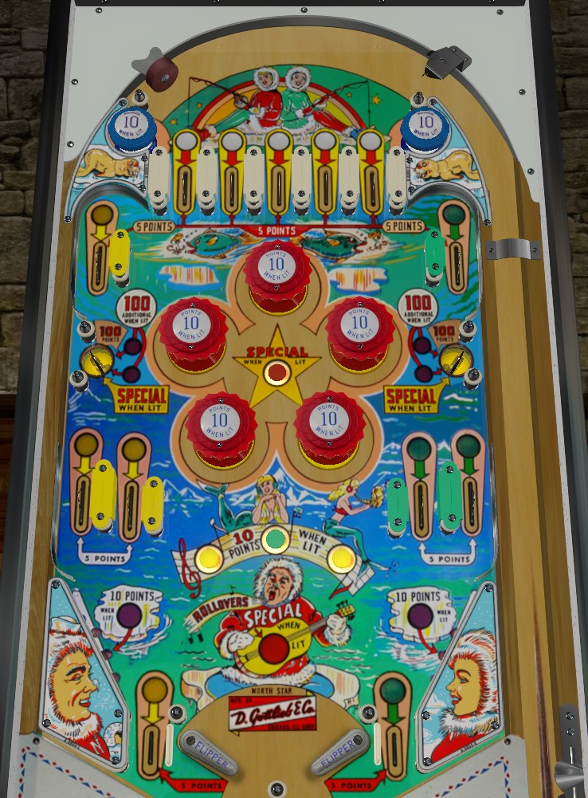

Plunge into a top lane that is still lit to light an additional bumper. Moderate points are available from getting the ball to rattle around the set of 5 bumpers; the more that are lit, the better. Side saucers score 100 points, which can be increased to 200 or 300 by completing one or both set of yellow and green lit rollovers, but it takes pop bumper luck or masterful nudging to actually end up there. Other than increasing saucer values, completing sets of rollovers serves only to light specials.
All rollover lanes score 5 points, whether lit or not. Roll through a lit lane to unlight it.
The white rollovers form the 5 top lanes. It's extremely difficult to collect top lanes at any time other than the initial plunge, so skill shot power and nudging needs to be very accurate to get them all. The leftmost lane lights the middle left bumper; lane 2 lights the lower left bumper; lane 3 lights the top bumper; lane 4 lights the lower right bumper; lane 5 lights the middle right bumper.
Yellow rollovers consist of one upper left lane, two middle left lanes, and the left out lane. Green rollovers are the same on the right. The uppermost green and yellow rollovers are the hardest, requiring a strong precise shot with the flippers- something intentionally almost impossible.
Side saucers score 100 points by default. Completing the set of either yellow or green rollovers increases the saucer value to 200 points; the left saucer will be lit for Special if the yellow rollovers were completed, and the right saucer will be lit for Special if the greens were completed. Completing both the yellow and the green means both saucers score 300 points and a special.
The rollover button in the center of the bumpers is occasionally lit for special. It is not lit until at least one colour has been collected, and is lit more frequently as more sets are completed. Any bumper or any switch in the game that scores 1 point, with the exception of unlit slingshots, can change whether or not the button special is lit.
There are 3 rollover buttons between/above the flippers. The center button is always lit for 10 points. Of the other two, exactly one will always be lit, which also toggles with 1-point switch hits. If all three sets of rollovers have been completed, lit buttons in this line of three score a special.
There are no in lanes. The out lanes are immediately behind the hinges of the flippers, rather than on the edges of the tables. The left and right out lanes are required for the yellow and green sets respectively. The slingshots are at the edges of the tables. One of the two is lit purple for 10 points, while the other scores 1 point. Once again, 1-point switch hits other than the slingshots themselves as well as any bumper will alternate which slingshot is lit for the increased score.
There is a center peg between the flippers. Don't expect it to do much.